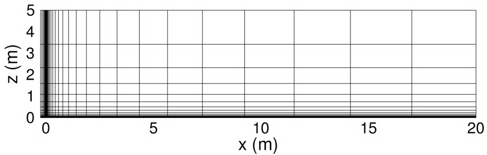

Public Access (formerly Langley Research Center)Turbulence Modeling Resource |
 This page under construction. Some links and files may not be here yet!
This page under construction. Some links and files may not be here yet!
Return to: Turbulence Modeling Resource Home Page
VERIF/2DTFP: 2D T3A Transitional Flat Plate Verification - Intro Page
The purpose here is to provide a large sequence of nested grids of the same family, along with results from existing CFD codes that employ specific forms of particular turbulence models, in order to help programmers verify their implementations of these same models. On a given grid, there may be differences between the results from different codes, but presumably as the grid is refined the results should approach the same answer (if the flow conditions and boundary conditions are the same). With verification, the purpose is not to establish the "goodness" of a model compared to experiment, but rather to establish that a model has been implemented correctly, as intended according to the equations and boundary conditions. (It is through validation that a model's "goodness" is established.) The purpose here is primarily verification.
This test case corresponds to the T3A condition from the T3 series of test cases hosted by the ERCOFTAC (European Research Community on Flow, Turbulence, and Combustion). This case is run with the following flow conditions:
|
Inlet velocity (m/s) |
69.44
|
|
Density (kg/m3)
|
0.053 |
|
Unit Reynolds Number (/m)
|
2.00E5 |
|
μ ∙ 10-5 (kg/[m∙s])
|
1.85 |
|
Freestream temperature (K)
|
300.0 |
|
Mach number
|
0.200 |
|
μt/μ at inlet
|
11.90 |
|
Tu (%) at inlet
|
5.855 |
|
Tu (%) at the leading edge
|
3.300 |
|
Distance from inflow to plate leading edge (m) |
0.250
|
The computational meshes for this case are those used in the following reference: Venkatachari, B. S., Mysore, P., V., Hildebrand, N., Choudhari, M., M., and Denison, M., F., Verification of the γ-Reθt Transition Model in OVERFLOW and FUN3D, Journal of Aircraft 2024 Vo. 61 No. 2, pp. 345-364, https://doi.org/10.2514/1.C037445. While the freestream Mach number of 0.2 is low enough that the flow is nearly incompressible, this is a compressible verification case. Therefore, incompressible codes would be expected to produce results that are close- but not quite the same- as the compressible solution for the refined grid. A visualization of the level 1 (most coarse) mesh used for this test case is shown below.

Grids will be made available in the near future
What to Expect:
|
RESULTS |
LINK TO EQUATIONS |
MRR Level |
|
2 |
Return to: Turbulence Modeling Resource Home Page
Recent significant updates:
04/02/2024 - Page created
Page Curators: Christopher Rumsey,
Ethan Vogel,
Clark Pederson
Last Updated: 4/7/2025